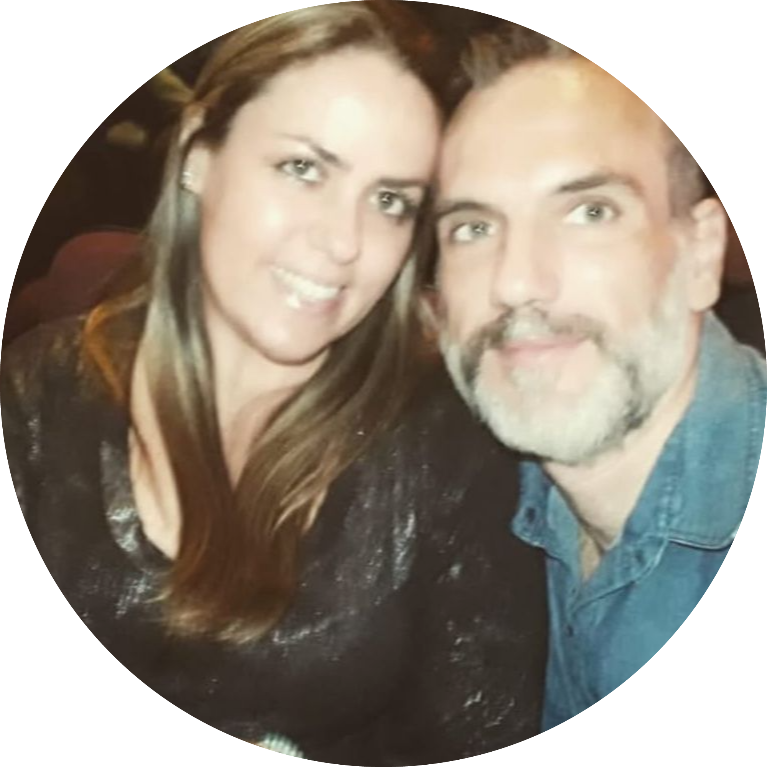
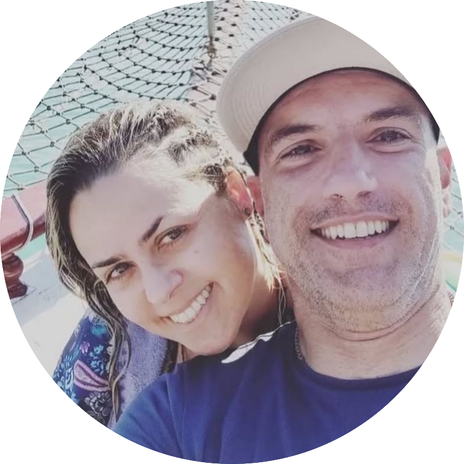
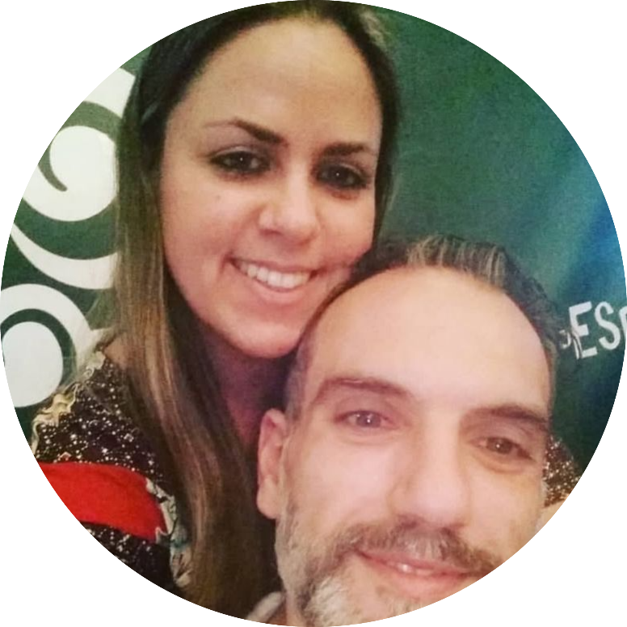
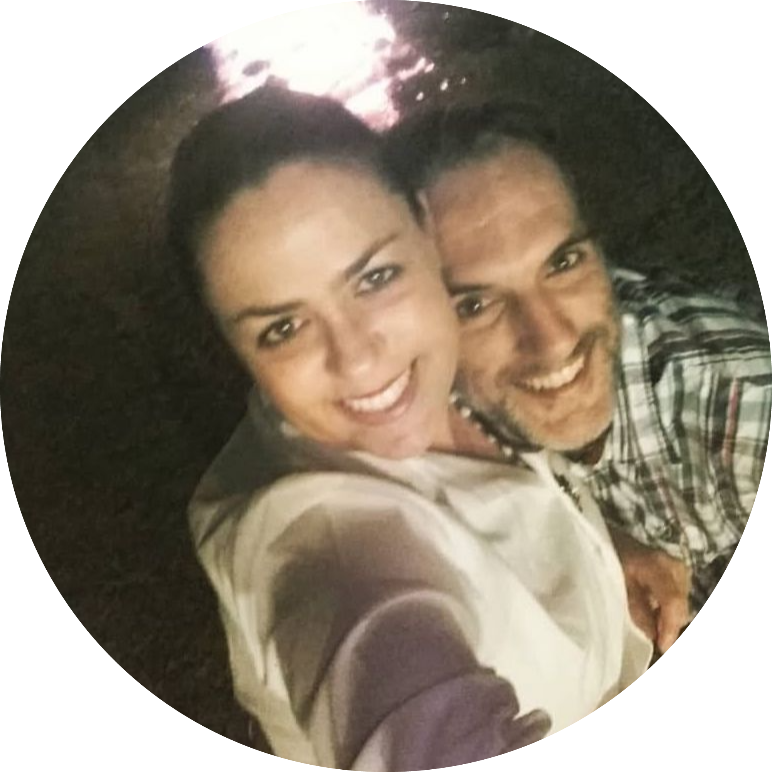
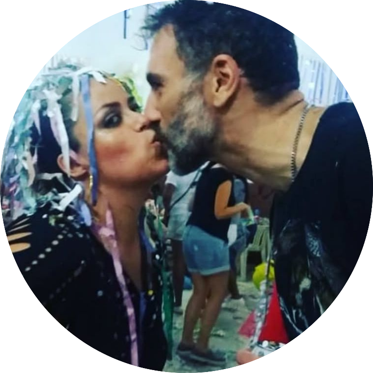
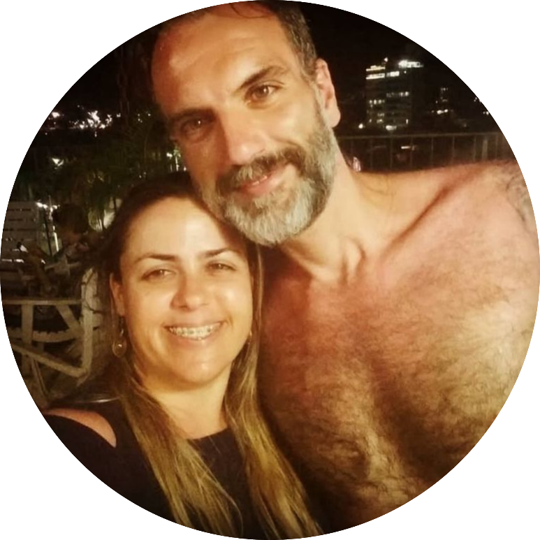
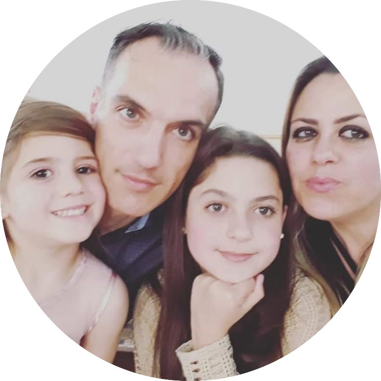
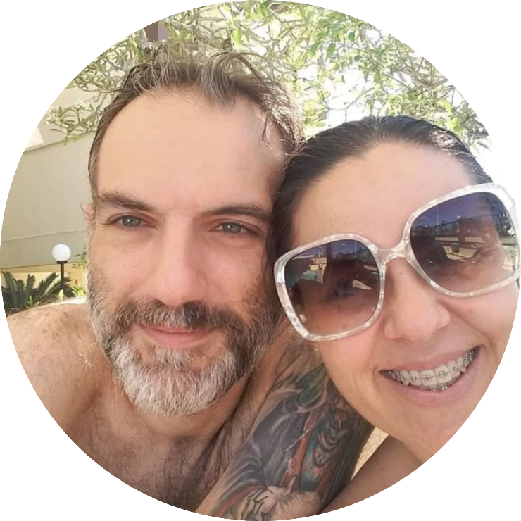

Vanessa 
Guarulhos




1.943
Vanessa
De longe a mais linda que já entrou na minha vida ❤️❤️❤️❤️
Vanessa
Linda é pouco, você é maravilhosa, perfeita e minha! 🥰🥰
Vanessa
Deus caprichou demais quando te fez. 👸
Vanessa
A mulher mais incrível que já conheci, sorte a minha te ter. 😍😍😍😍
Vanessa
Cada dia mais apaixonado por você, meu amor! 🔥🔥🔥
Vanessa
Se beleza fosse crime, você estaria presa pra sempre, meu amor! 😂😂 ❤
Se eu pudesse congelar o tempo, seria em todos os momentos em que a gente esteve juntos, porque são nesses instantes que eu me sinto completo, feliz e com a certeza de que encontrei o amor da minha vida. 🌍





 Previas do Spotify
Previas do Spotify